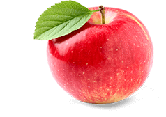

Google lens VS Mobile Net
Google Lens VS Mobile Net
We are going to see which identification net is better with 4 objects.
Both Mobile Net and Google Lens have more than
1 million images!
We are going to see which identification net is better with 4 objects.
Both Mobile Net and Google Lens have more than
1 million images!
1 million images!

Object: Apple
Result from Google Lens - apple
Result from Mobile Net - Punching bag, punching ball
Object: Teddy Bear
Result from Google Lens - Teddy Bear
Result from Mobile Net - Teddy bear

Object: Shoe
Result from Google Lens - Shoe
Result from Mobile Net - Running Shoe
Object: book
Result from Google Lens - Book
Result from Mobile Net - Rule, Ruler
Google Net 4/4 Mobile Net 2/4
Google Net most accurate